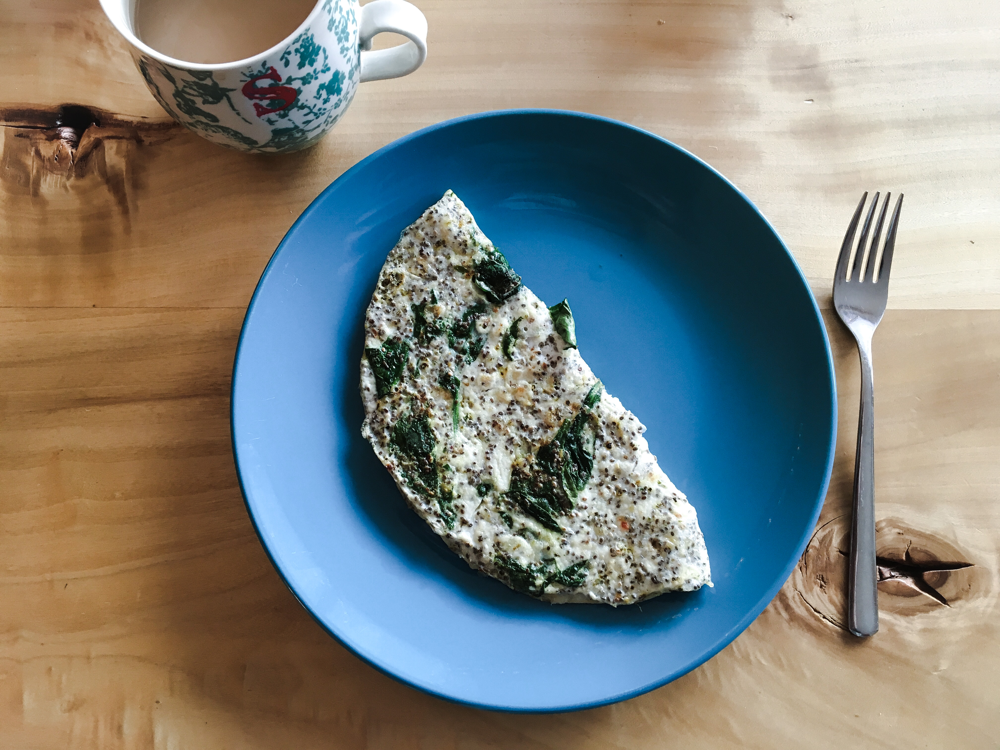

What You'll Need:
- At least 9" round frying pan
- Spatula
- Oven Top
- Bowl and Whisk
Ingredients:
- 4 oz Egg whites
- 1 oz almond milk
- Italian Spices
- Garlic Salt
- 1 Tbsp Chia Seeds
- 1 Cup Baby Spinach
- Olive Oil Spray
- Shredded Sharp White Cheddar Cheese
Directions:
- Whisk egg whites, almond milk, chia seeds and dash of spices and garlic salt together in bowl.
- Spray fry pan with olive oil and turn on oven top to low heat.
- Spread the spinach leaves over the pan evenly and let sit untill they start to shrink.
- Slowly pour the whisked egg mixture over spinach leaves onto pan, covering the whole pan.
- Let cook until egg is cooked through and edges are starting to brown.
- Use spatula to start lifting around the edges of the omelete to make sure its not stuck to pan.
- Then use spatula to flip over the omelete (or attempt to flip with pan)
- Spread shredded cheddar cheese on half the omelette.
- Using spatula fold the omelete in half and let sit for cheese to melt
- Put on plate and enjoy! ☻
